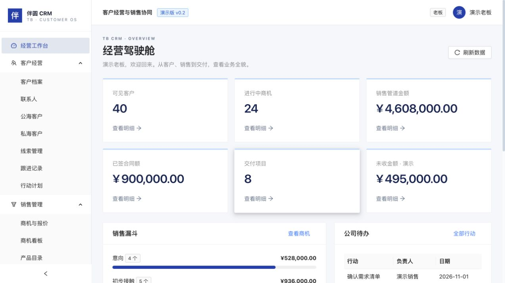
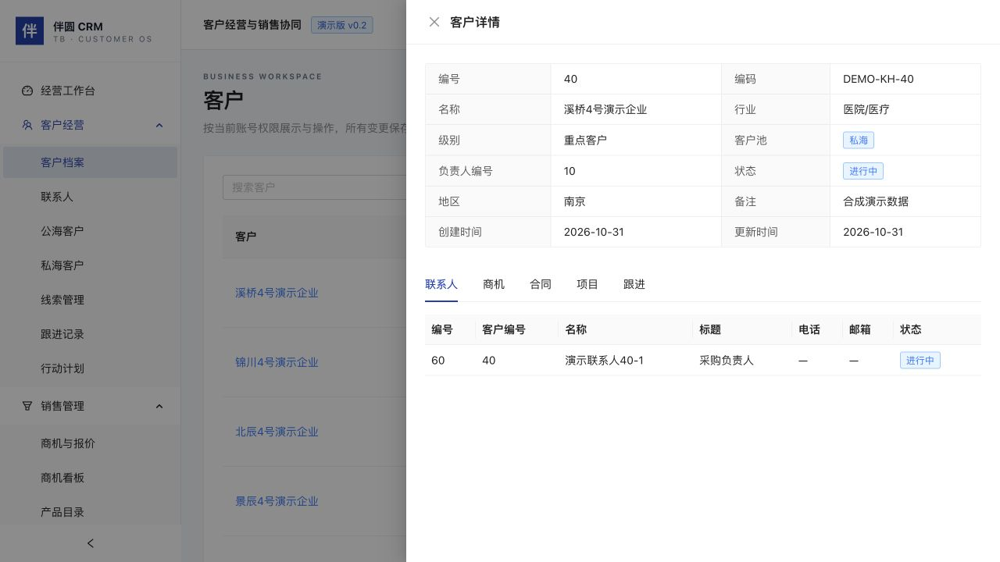
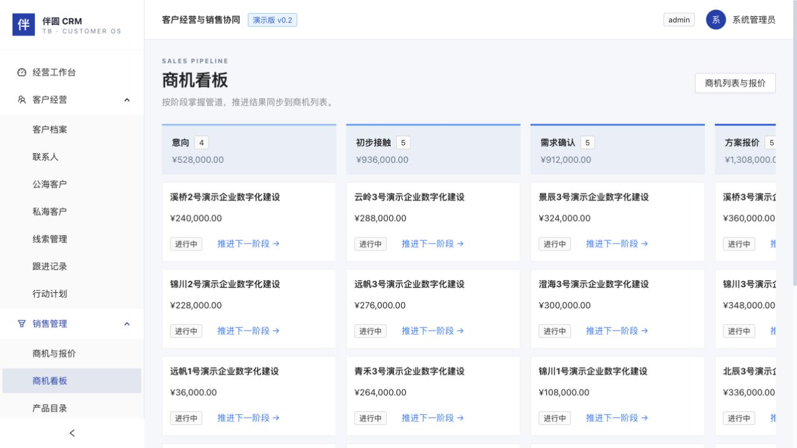
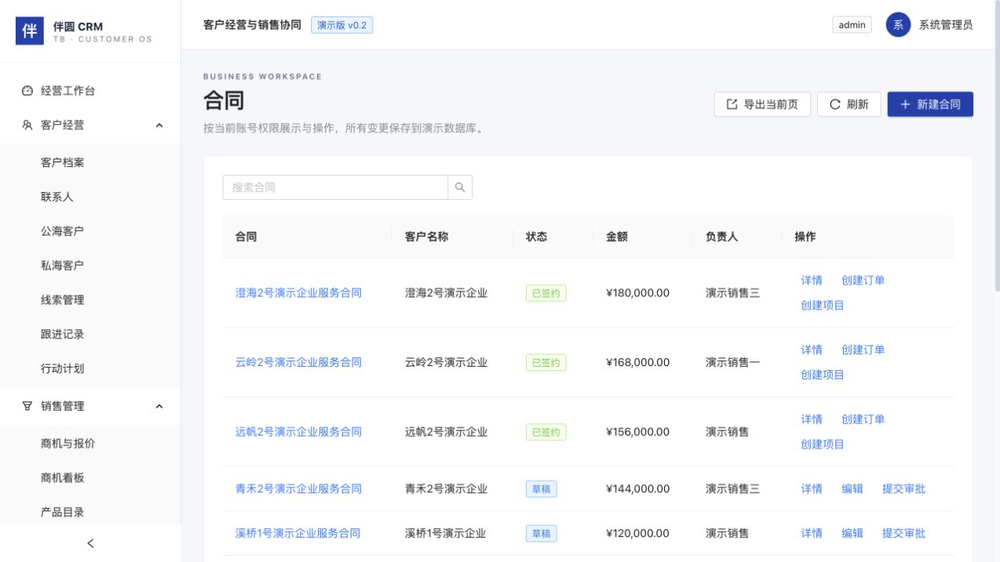
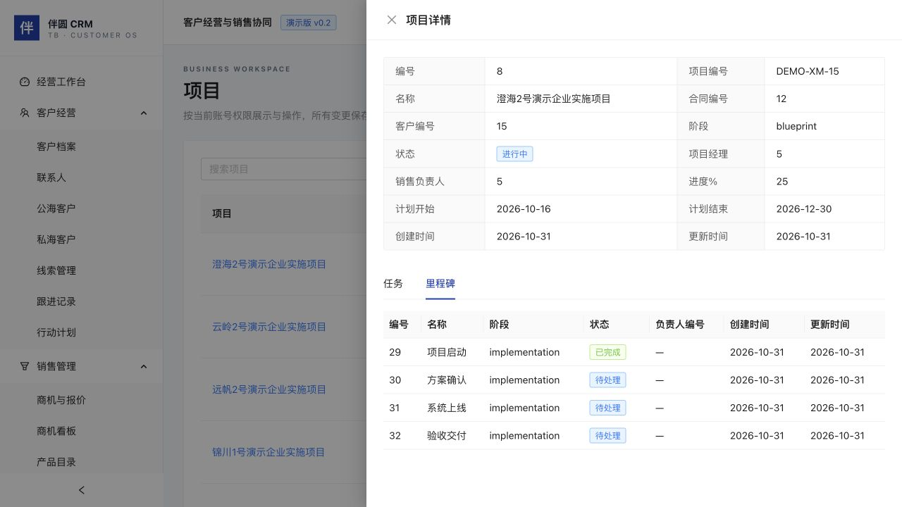
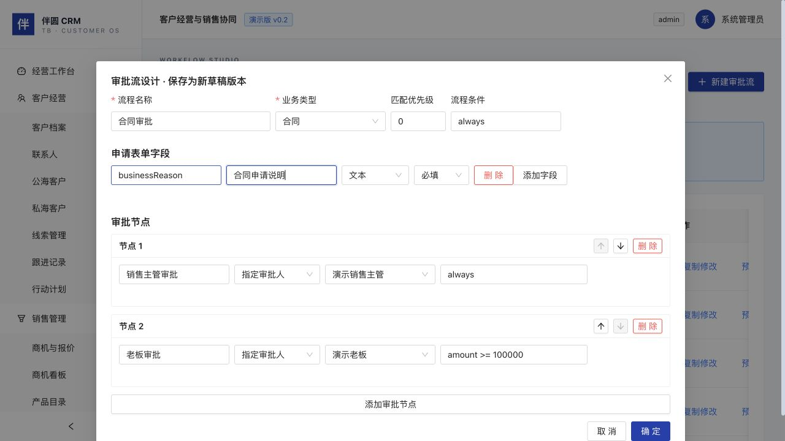
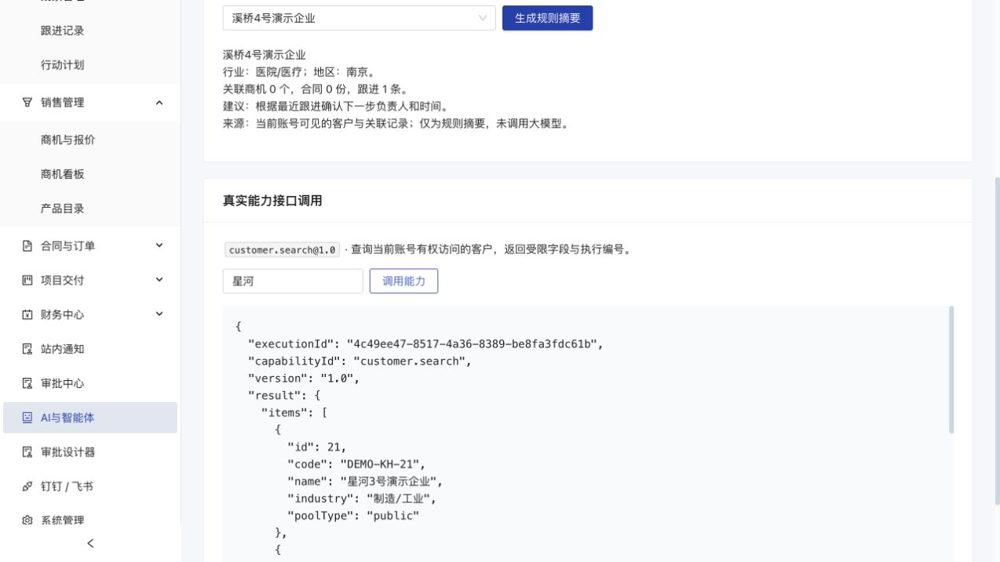
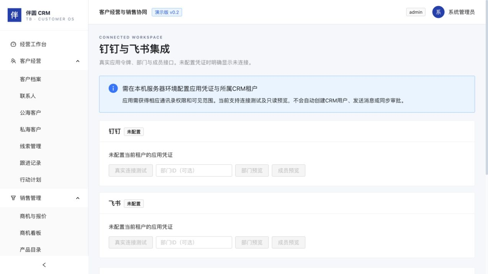
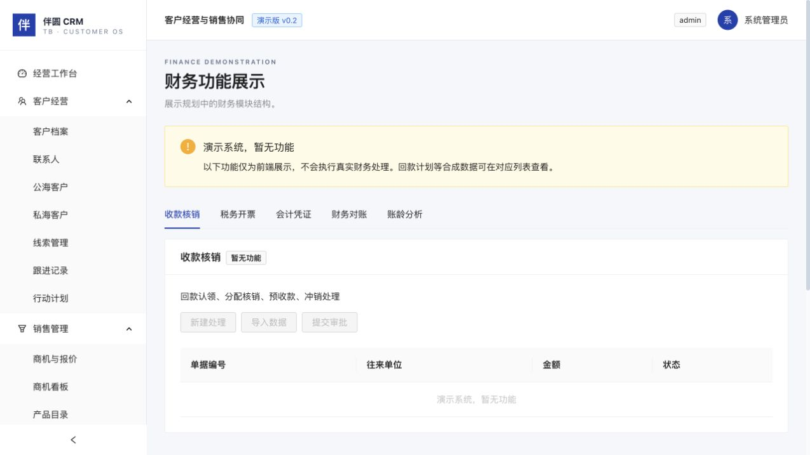

实际运行系统采集 2026年10月31日 合成演示数据
入口 经营工作台

客户、商机、合同和项目指标支持下钻。
老板看公司，主管看团队，销售看本人。
图中金额与企业均为合成演示数据。
入口 客户经营 客户档案 详情

一个客户下查看联系人、商机、合同、项目和跟进。
公海领取、退回和分配受当前角色与记录范围约束。
先看关联记录，再补下一步行动。
入口 销售管理 商机看板

逐阶段推进，同步商机列表。
产品报价在商机列表操作，数量与单价计算明细金额。
推进会写入数据库，演示前先选择测试记录。
入口 合同与订单 合同管理

草稿提交审批，通过后确认签约。
已签合同可生成关联订单和项目，继续各自审批。
不能通过直接改状态跳过业务审批。
入口 项目交付 项目总览 详情

查看关联任务和四个里程碑。
推进至100%后，填写验收说明并完成项目。
图示为已初始化项目，新增项目须先审批。
入口 admin 审批设计器 复制修改

文本、数字、日期字段，可配置必填。
顺序节点支持金额条件，保存新草稿并发布生效。
截图是未保存的编辑示例，节点条件为 amount >= 100000。
入口 AI与智能体

摘要读取当前账号可见客户及关联数据。
customer.search@1.0 返回受限字段及执行编号。
当前摘要未调用大模型。自主写入尚未开放。
入口 admin 钉钉 / 飞书

支持真实令牌测试、部门和成员分页预览。
凭证按CRM租户绑定，未配置时禁用操作。
尚未提供企业凭证，不能宣称已完成企业联调。
入口 财务中心 财务功能展示

收款核销、税务开票、会计凭证、对账和账龄页签。
回款计划、发票和收款列表可查合成数据。
演示系统，暂无真实财务处理功能。